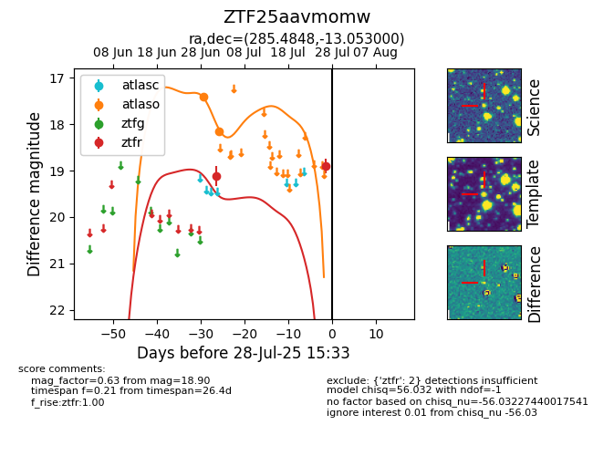

Target ZTF25aavmomw at 2025-07-28 15:33, see:
FINK: fink-portal.org/ZTF25aavmomw
Lasair: lasair-ztf.lsst.ac.uk/objects/ZTF25aavmomw
ALeRCE: alerce.online/object/ZTF25aavmomw
alt names
ZTF25aavmomw (ztf,fink)
coordinates:
equatorial (ra, dec) = (285.4848,-13.05300)
galactic (l, b) = (22.4149,-8.20398)
photometry
last atlaso=18.16, ztfr=18.90
2 atlaso, 2 ztfr detections
